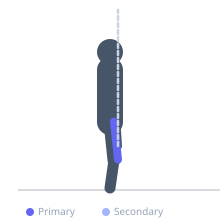

Exercise guide / Terminal Knee Extension with Band
Terminal Knee Extension with Band
Terminal knee extension with a resistance band targets the final degrees of knee extension, emphasizing the vastus medialis oblique (VMO). A band is anchored behind the knee, and the exerciser extends the knee against the band's pull from a slightly flexed position. This exercise is widely used in knee rehabilitation protocols following injury or surgery to restore quadriceps activation and patellar tracking.
Primary muscles
vastus medialis
Secondary muscles
rectus femoris
Stabilizers
gluteus medius
Equipment
Resistance Band (Loop / Mini Band)


Starting position
- Anchor a resistance band to a fixed point behind you at knee height. Stand facing away and loop the band behind one knee. Begin with that knee slightly flexed, weight on the working leg.
Setup
- Secure a resistance band at approximately knee height to a squat rack or door anchor. Stand far enough from the anchor that the band provides tension when the knee is at 15-20 degrees of flexion.
Steps
- Step 1: Stand facing away from the anchor with the band behind your knee, maintaining a slight forward lean if needed for balance.
- Step 2: Begin with the knee bent approximately 20 degrees against band resistance.
- Step 3: Contract the quadriceps to fully extend the knee to lockout, squeezing the VMO.
- Step 4: Slowly return to the starting flexed position under control. Repeat.
Coaching cues
- Feel the inner quad contract at lockout
- Drive the heel into the floor as you extend
- Do not hyperextend the knee — stop at neutral
Breathing
- Exhale as you extend the knee to lockout. Inhale as you return to the flexed starting position.
Range of motion
- Work through approximately 20 degrees of flexion to full extension. Focus quality on the last 10-15 degrees where VMO activation peaks.
Tempo
- 2-0-2-1 (2s flex, no pause, 2s extend, 1s squeeze at lockout)
Common mistakes
- Allowing the knee to drift inward (valgus) during extension
- Using momentum rather than controlled muscle contraction
- Not fully extending to lockout — partial extension misses the VMO stimulus
Safety
- Consult a physiotherapist before using this exercise for post-surgical rehabilitation
- Do not perform with acute joint swelling
- Keep the movement slow and controlled throughout
Training
- endurance: 15–25 reps
- mobility: 10–15 reps
- endurance: 2–4 sets
- mobility: 2–3 sets
- Rest: {'endurance': 45, 'mobility': 60}